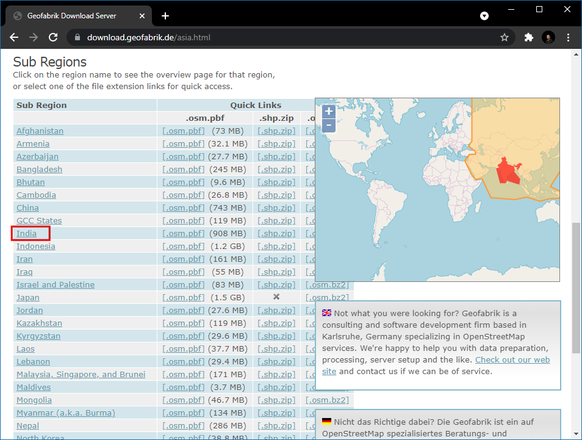
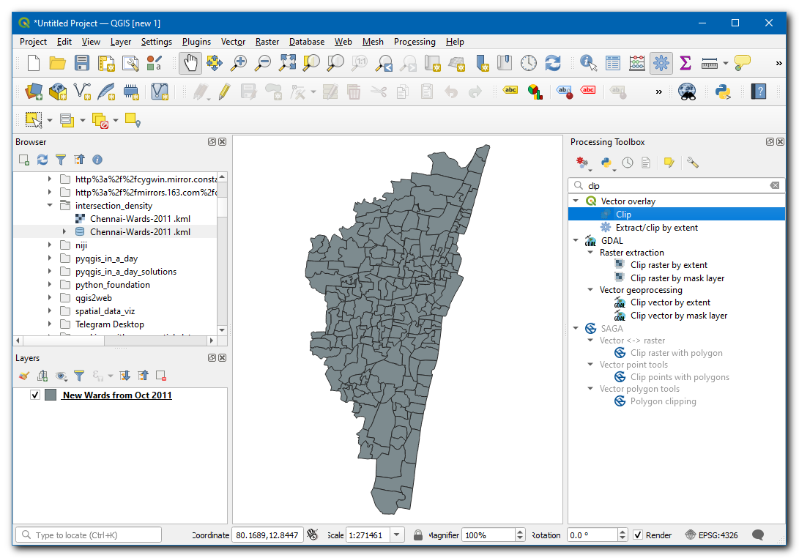
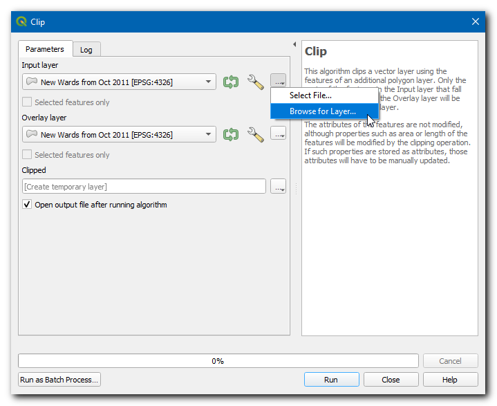
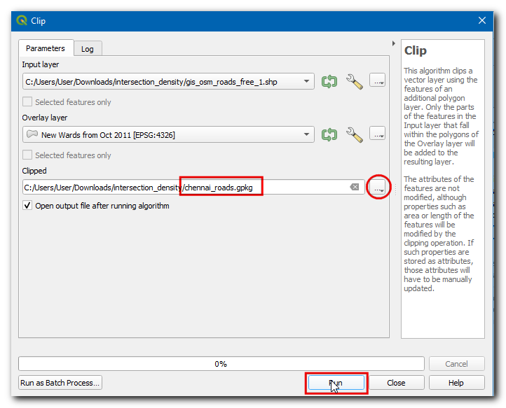
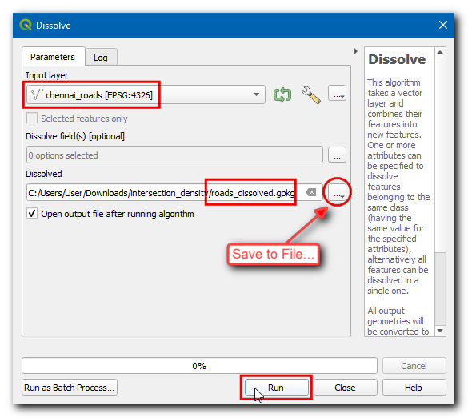
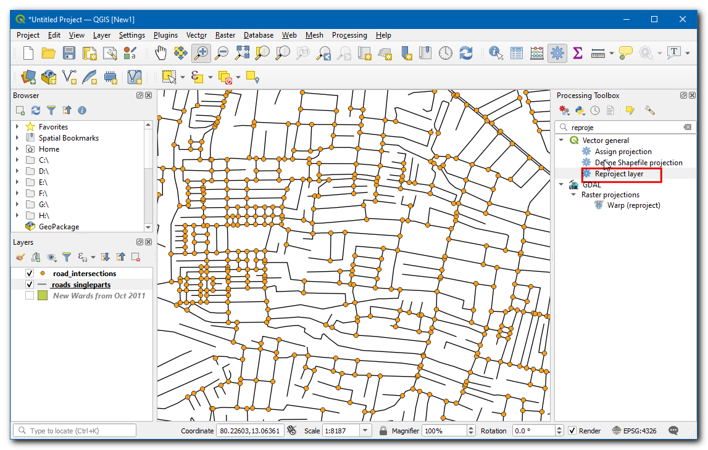
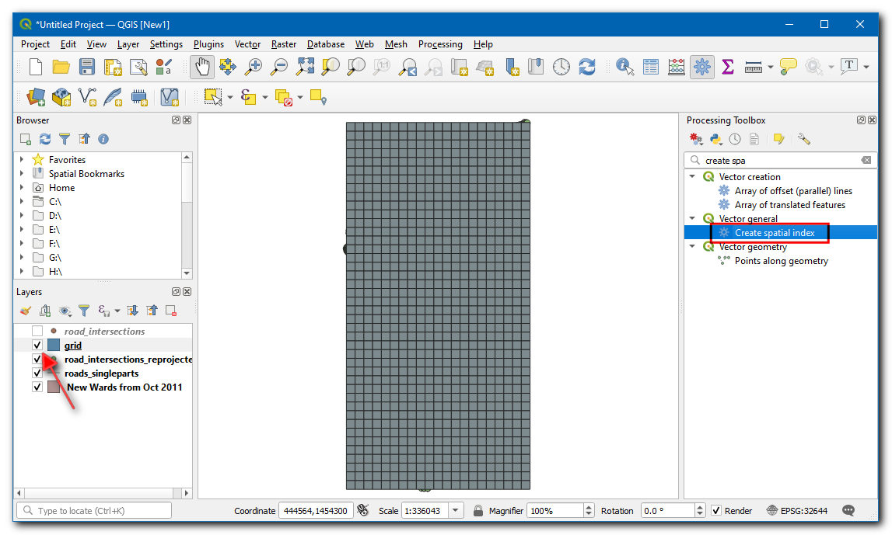
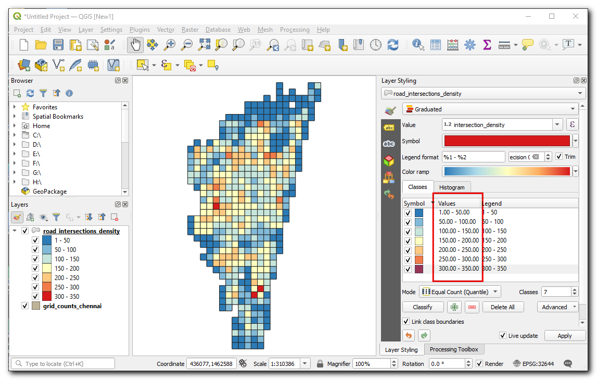

Dichtheid van straatkruisingen berekenen (QGIS3)¶
Dichtheid van straatkruisingen is een betekenisvolle meting van de verbondenheid van een netwerk. Men kan straatkruisingen van een normaal raster uitnemen en samenvoegen om de dichtheid te berekenen. Deze analyse wordt gewoonlijk gebruikt bij het ontwerpen van vervoer als ook bij stedelijke ontwikkeling voor het bepalen van het doorlopen van buurten. Met de beschikbaarheid van een globale gegevensset voor netwerken van straten uit OpenStreetMap en QGIS, kunnen we eenvoudig de dichtheid van kruisingen berekenen en visualiseren voor elk deel van de wereld.
Overzicht van de taak¶
In this tutorial, we will take OpenStreetMap road network data and calculate the street intersection density for the city of Chennai in India.
Andere vaardigheden die u zult leren¶
Hoe de gegevens van OpenStreetMap als shapefiles te downloaden en te clippen naar uw gebied van interesse.
Hoe rasters te maken in QGIS.
De gegevens ophalen¶
We zullen de gegevens gebruiken uit opencities om de stadsgrenzen voor Chennai te verkrijgen en dan het netwerk van straten vanuit OpenStreetMap Data Extracts voor India.
De stadsgrenzen downloaden¶
Ga naar de website opencity en zoek naar “Chennai wards map”.

Klik op de eerste link en download de gegevens in de indeling KML. Een laag
Chennai-wards-2011.kmlzal worden gedownload.

Het netwerk van straten downloaden¶
Ga naar de server OpenStreetMap Data Extracts download van GEOFABRIK. Voor deze handleiding hebben we de gegevens nodig van de stad Chennai in India. Klik op Asia.

Selecteer dan in sub-regionsIndia.

The
.shp.zipfile for the Southern Zone is the file we are looking for. Click on the link to download.

This is a large download containing an extract of data for the entire country. Unzip the
southern-zone-latest-free.shp.zip. You will get many shapefile layers.

Het netwerk van straten clippen naar de stadsgrenzen¶
We zullen nu de laag met wegen op landniveau clippen tot ons interessegebied. Open QGIS en sleep
Chennai-wards-2011.kmlnaar het kaartvenster en zet het neer.

Instead of opening a large layer in QGIS, we can directly read it from the disk and clip it. Open the Processing Toolbox and locate the algorithm. Double-click to open it.

Selecteer, in de Invoerlaag, de
…en klik op Bladeren naar laag…

Navigeer naar de map waar u de gegevens van OpenStreetMap hebt gedownload en selecteer
gis_osm_roads_free_1.shp. Kies, in de Overleglaag,New Wards from Oct 2011. Klik dan op…in Geclipt en selecteer Opslaan als bestand…, blader naar de map waar u het resultaat wilt opslaan, voer als naam inchennai_roads.gpkg, en klik op Uitvoeren.

Once the processing finishes, a new layer
chennai_roadswill be loaded in the canvas.

Voor het gemak kunt u direct een kopie van de geclipte gegevensset downloaden vanaf de link hieronder:
Gegevensbron: [OPENCITIES] [GEOFABRIK]
Procedure¶
Now both layers used for the calculation will be available, if you have downloaded the data, then locate the
Chennai-Wards-2011.kmlandchennai_roads.gpkgin Browser, then drag and drop them on the canvas.

De eerste taak is om de kruisingen van wegen uit te nemen. Dit kan worden gedaan met het ingebouwde gereedschap Kruisingen van lijnen. Laten we dit eerst testen op een kleine subset om te zien of de resultaten voldoen. Selecteer de laag met wegen en gebruik het gereedschap Objecten selecteren per gebied of een enkele klik om een rechthoek te tekenen en een aantal wegen te selecteren.

Open the Processing Toolbox and locate the algorithm. Double-click to open it.

Selecteer
chennai_roadsals zowel Invoerlaag als Intersectie van laag. Zorg er voor om Alleen geselecteerde objecten. Klik op Uitvoeren.

Een nieuwe laag
Kruisingenzal worden toegevoegd. Het zal u opvallen dat, waar de meeste kruisingspunten correct zijn, er toch enkele valse positieven zijn. Dat komt omdat het algoritme kruisingen van elk lijnsegment als een geldige kruising beschouwt. Maar voor onze analyse moeten we alleen de kruisingen uitnemen voor 2 of meer straten die elkaar rkuisen.

Remove the Intersections layer and click Deselect features from all layers button to remove the selection. We will now merge all adjacent road segments, so the segments between intersections are merged into a single feature. Open the Processing Toolbox and locate the algorithm. Double-click to open it.

Selecteer
chennai_roadsals de Invoerlaag. Voer de naam voor de uitvoerlaag van Samensmelten in alsroads_dissolved.gpkg. Klik op Uitvoeren.

De resulterende laag
roads_dissolvedbevat alle wegsegmenten, samengevoegd tot één enkel object.

Next, open the Processing Toolbox and locate algorithm. Double-click to open it. Select
roads_dissolvedlayer as the Input layer. Enterroads_singleparts.gpkgas the Single parts output. Click Run.

The resulting layer
roads_singlepartswill have all adjacent segments merged, remove theroads_dissolvedandchennai_roadslayers. Now, open the Processing Toolbox and locate the algorithm. Double-click to launch it.

Selecteer
roads_singlepartsals zowel de Invoerlaag als de Intersectie van laag. Noem de uitvoer Kruisingenroads_line_intersections.gpkg. Klik op Uitvoeren.

Notitie
Dit is een, computertechnisch gezien, intensieve bewerking en zou enige tijd kunnen vergen, afhankelijk van de verwerkingscapaciteit van uw computer.
The resulting layer
roads_line_intersectionsnow has all intersections correctly identified. But it is still not perfect. Use the Select features by Area tool and select any intersection. You will see that at each intersection there are few duplicate points from adjacent segments. If we use this layer for further analysis, it will result in an inflated number of intersections. Let’s remove duplicates, open the Processing Toolbox and locate the algorithm. Selectroads_line_intersectionsas the Input layer and enterroad_intersections.gpkgas the Cleaned output layer. Click Run.

The new
road_intersectionslayer has the correct number of road intersections extracted from the source layer. Right-click the oldroad_line_intersectionslayer and select Remove layer to remove it.

We will now compute the density of points by overlaying a regular grid and counting points in each grid polygon. We must reproject the data to a projected CRS so we can use linear units of measurements. We can use an appropriate CRS based on the UTM zone where the city is located. You can see UTM Grid Zones of the World map to locate the UTM zone for your city. Chennai falls in the UTM Zone 44N. Open the Processing Toolbox and locate the algorithm. Double click to open it.

Select
road_intersectionsas the Input layer. Search by clicking the globe icon next to Target CRS and selectEPSG:32644 - WGS 84 / UTM zone 44N. This is a CRS based on the WGS84 datum for the UTM Zone 44N. Enter the Reprojected output layer asroad_intersections_reprojected.gpkg. Click Run.

Als de verwerking is voltooid en de laag
road_intersections_reprojectedis toegevoegd, klik met rechts en selecteer . Verwijder de laagroad_intersections.

Project CRS will be updated in the bottom right of the window. The purpose of this step to ensure that all layers are displayed in the CRS of new layer. We are now ready to create the grid using the
road_intersections_reprojectedas reference. Open the Processing Toolbox and locate the algorithm. Double click to open.

Selecteer Type raster als Rechthoek (polygoon). Klik op de knop
…in Grid-bereik en selecteer .

Selecteer het project-CRS als het CRS raster. We willen een raster maken van 1km x 1km, dus stel beide Horizontale afstand en Verticale afstand in op
1000meter. Sla de uitvoerlaag Grid op alsgrid.gpkg. Klik op Uitvoeren.

The
gridlayer containing rectangular grid polygons will be created. We can now count the number of points in each polygon, but since our layers are large, this process can take a long time. One way to speed up spatial operations is to use a Spatial Index. Open the Processing Toolbox and locate the algorithm. Double click to open it.

Select
gridlayer and click Run, now the layer will have a spatial index which can boost the performance of computation with this layer.

Open de Toolbox van Processing en zoek naar het algoritme .
Selecteer
gridals de laag Polygonen enroad_intersections_reprojectedals de laag Punten. Sla de uitvoerlaag Aantal op alsgrid_count.gpkg. Klik op Uitvoeren.

De resulterende laag
grid_countzal een attribuut NUMPOINTS hebben dat het aantal kruispunten binnen elke rasterpolygoon zal bevatten. Er zijn veel rasterpolygonen met 0 punten. Het zou onze analyse en visualisatie helpen om rasterpolygonen te verwijderen die geen kruisingen bevatten. Open de Toolbox van Processing en zoek naar het algoritme .

Selecteer
grid_countals de Invoerlaag, en selecteerNUMPOINTSin Attribuut selecteren,>in Operator en voer0als de Waarde. Sla de uitvoerlaag Uitgenomen (attribuut) op alsgrid_counts_chennai.gpkg. Klik op Uitvoeren.

The resulting layer
grid_counts_chennaiwill have grid polygons over the Chennai city and contains the number of road intersections as an attribute for each polygon. Remove all layers exceptgrid_counts_chennai.
Let’s clean up the attribute table of our data layer. The preferred method to make any changes to the attribute table is to use a processing algorithm called Refactor Fields, open the Processing Toolbox and locate the algorithm. Double-click to open it. Click on any row in the Field Mapping section to select it. You can hold the Shift key to select multiple rows, select all fields except fid and NUMPOINTS. Click the Delete selected fields button.

Rename the NUMPOINTS field as
intersection_densityand save the layer asroad_intersection_density.gpkg, click Run.

Laten we deze laag opmaken om de dichtheid van elke rasterpolygoon te bekijken. Selecteer de laag
road_intersection_densityen klik op Paneel Laag opmaken openen. Selecteer de renderer Gradueel, en selecteer in Waarde Intersection Density, een Kleurverloop van uw keuze, stel de classes in op7en klik op Classificeren.
In the values enter
0-50,50-100,100-150and so on up to300 - 350. You have now created a map showing intersection density across the city.

If you want to give feedback or share your experience with this tutorial, please comment below. (requires GitHub account)